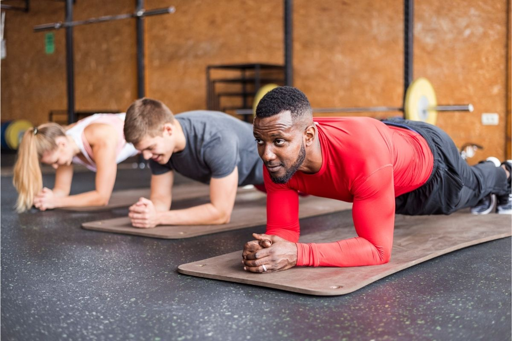
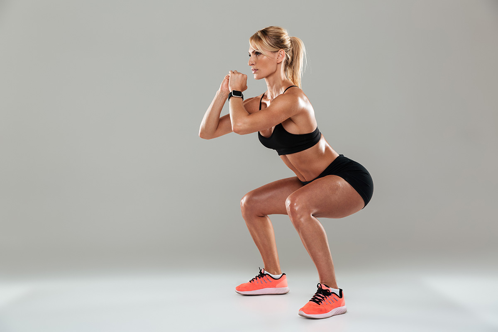
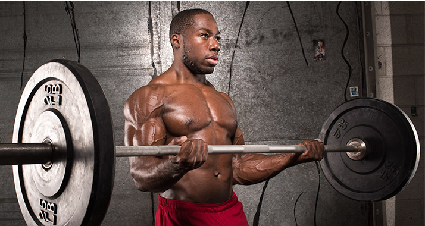
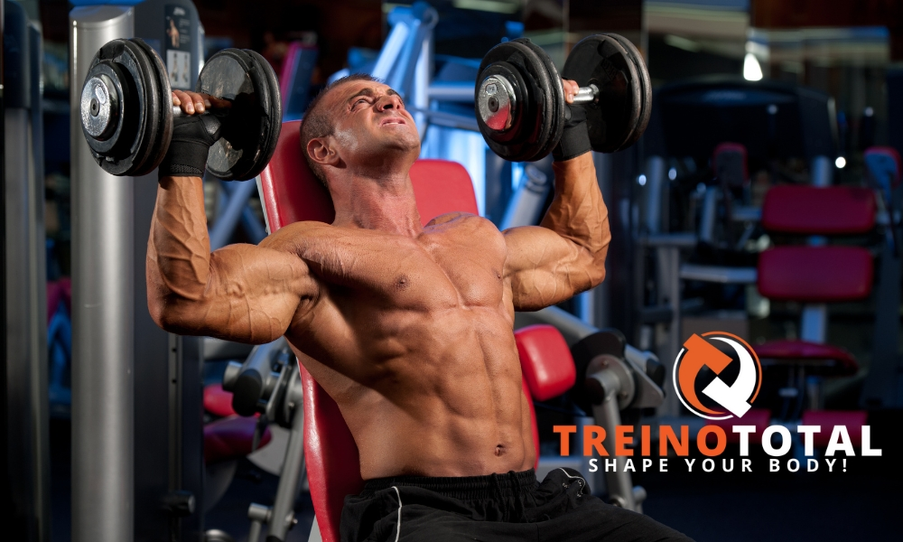

Peito
Os músculos peitorais são responsáveis por movimentos de adução, rotação interna e flexão do ombro, permitindo empurrar objetos para frente e realizar movimentos de arremesso.

Exercício: Flexões de braço ativam o peitoral maior, auxiliando na adução e empurrão do corpo em relação ao solo.
Abdome
Os músculos abdominais controlam a flexão da coluna, rotação do tronco e estabilização do core, fundamentais para a postura e equilíbrio.
Exercício: Pranchas fortalecem o core, mantendo a estabilidade da coluna e controlando o alinhamento postural.
Coxa Frontal
Os quadríceps são responsáveis pela extensão do joelho, essencial para levantar-se, correr e saltar.
Exercício: Agachamentos ativam os quadríceps ao estender os joelhos, além de envolver os glúteos para estabilização.
Bíceps
Os bíceps realizam a flexão do cotovelo e a supinação do antebraço, fundamentais para puxar, levantar objetos e girar o antebraço.
Exercício: A rosca direta foca na flexão do cotovelo, destacando a contração dos bíceps para elevação do peso.
Ombros
Os músculos do ombro, incluindo o deltoide anterior, medial e posterior, são responsáveis por movimentos de abdução, flexão, extensão e rotação do braço, essenciais para levantar, empurrar e estabilizar cargas acima da cabeça.
Exercício: O desenvolvimento de ombros trabalha a flexão e abdução do braço, ativando principalmente o deltoide para levantar o peso acima da cabeça.